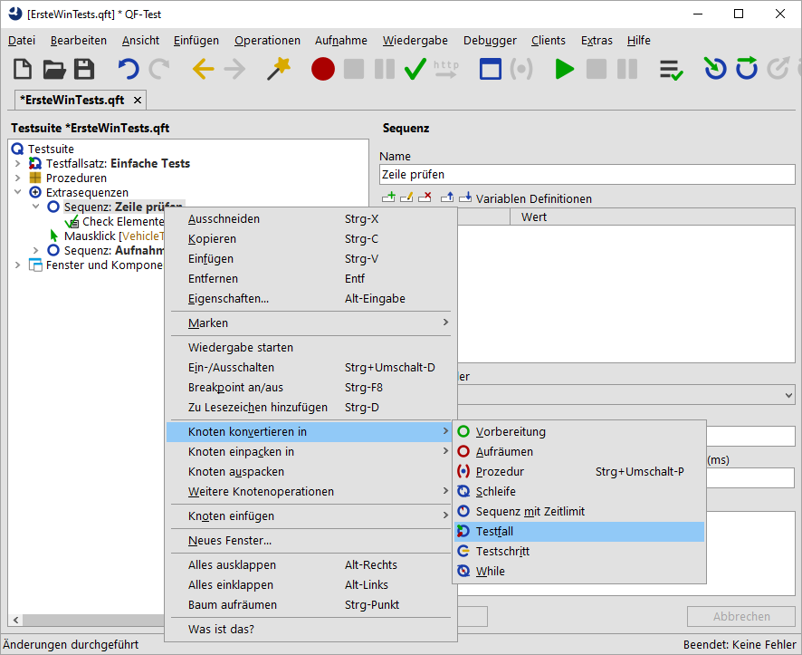
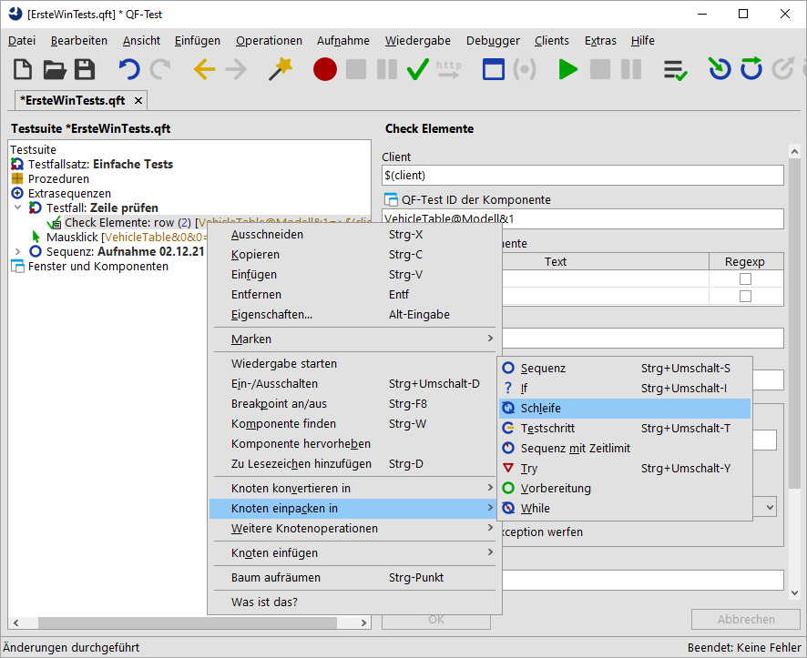
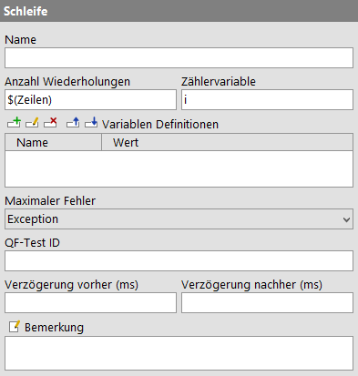
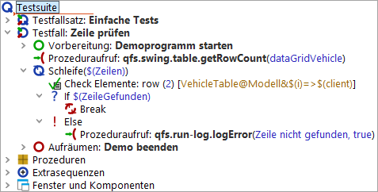
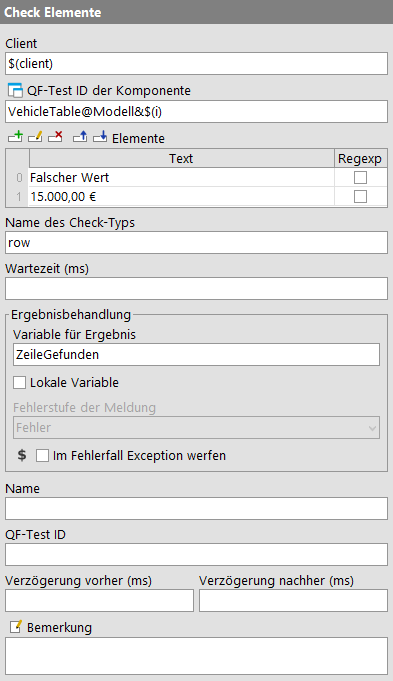

| Version 6.0.3 |
QF-Test stellt zwei Knotentypen für die Implementierung von Schleifen zur Verfügung:
Hinweis
'Schleife' Knoten enden auf jeden Fall nach der angegeben Anzahl von
Wiederholungen. Bei 'While' Knoten muss man jedoch selbst dafür
sorgen, dass die Ausführung irgendwann endet, indem die Bedingung falsch wird.
Ansonsten kommt es zur Endlosschleife. Im interaktiven Modus können Sie
in so einem Fall einfach die Pausetaste  drücken. Im Batch-Modus, d.h. wenn Sie QF-Test mit dem Kommandozeilenpameter
drücken. Im Batch-Modus, d.h. wenn Sie QF-Test mit dem Kommandozeilenpameter
-batch starten um die angegebene Testsuite ohne die QF-Test
Benutzeroberfläche auszuführen, müssen Sie dann jedoch den QF-Test Prozess "abschießen".
In der folgenden Übung wollen wir einen Testfall implementieren, der prüft, ob eine bestimmte Zeile in der Tabelle des CarConfig Demos angezeigt wird.
Die im Testfall durchgeführten Aktionen sind:
Bitte beginnen Sie mit der Aufnahme eines Checks auf die zu suchende Zeile:
Zeile prüfen.
|
|  | ||
|
| Abbildung 26.4: Knoten konvertieren | ||
In QF-Test können Sie sehr effizient Knoten hinzufügen, indem Sie einen Knoten in einen anderen einpacken:
|
|  | ||
|
| Abbildung 26.5: Knoten einpacken | ||
QF-Test ermittelt dynamisch, in welche Knoten ein Knoten eingepackt werden kann und bietet nur diese zur Auswahl an. Entsprechend kann es passieren, dass Sie "Schleife" im Untermenü nicht finden. Sie sollten dann prüfen, ob Sie den Rechtsklick auf den richtigen Knoten ausgeführt haben. Dasselbe gilt für die Operationen "Knoten konvertieren in" und "Knoten einfügen".
Als nächstes setzen wir den Wert für das 'Anzahl Wiederholungen' Attribut des
'Schleife' Knoten. Dazu müssen wir bestimmen, wie viele Zeilen die
Tabelle hat. Es gibt keinen Knoten, der diese Operation direkt ausführen kann.
Allerdings gibt es eine derartige Prozedur in der im letzten Kapitel besprochenen
Standardbibliothek. Diese befindet sich im Package qfs.win.table
und heißt getRowCount.
Das Hinzufügen einer Prozedur über [Strg-A] wurde in Manuelle Erstellung von Prozeduren beschrieben. Dort finden Sie auch Screenshots zur Aktion.
Zeilen im
'Variable für Rückgabewert' Attribut ein.
id in der
Variablen Definitionen Tabelle auf die QF-Test Komponenten ID der Tabelle
VehicleTable.
$(Zeilen)
ein.
i,
im entsprechenden Attribut des 'Schleife' Knotens ein.
|
|  | ||
|
| Abbildung 26.6: Details eines 'Schleife' Knotens | ||
In den Details des 'Check' Knotens tragen wir nun in der QF-Test ID der Komponente statt des aufgenommenen Zeilenindex eine Referenz auf die Zählervariable ein und setzen eine Ergebnisvariable. Außerdem fügen wir einen 'If' Knoten unter dem 'Check' Knoten hinzu, der das Ergebnis auswertet und die Schleife über einen 'Break' Knoten verlässt, wenn die entsprechende Zeile gefunden wurde.
$(i). Die QF-Test ID der Komponente sollte nun
VehicleTable@Modell&$(i) lauten.
ZeileGefunden in das Attribut 'Variable
für Ergebnis' ein und klicken OK.
$(ZeileGefunden) im Attribut 'Bedingung' ein
und klicken OK.
Die Variable ZeileGefunden wird vom 'Check' Knoten entweder auf den Wert
'true' oder auf den Wert 'false' gesetzt, so dass wir im 'Bedingung' Attribut des
'If' Knoten nur die Referenz auf die Variable $(ZeileGefunden)
einzutragen brauchen.
In den nächsten Schritten wollen wir einen 'Else' Knoten als letzten
Knoten im 'Schleife' Knoten einfügen. Er wird nur ausgeführt, wenn die Schleife
so oft wie angegeben ausgeführt wurde, was in unserem Fall bedeutet, dass die
Variable ZeileGefunden nie wahr wurde, weil die Zeile nicht gefunden wurde.
logError aus dem
Package qfs.run-log wie oben beschrieben ein.
Zeile nicht gefunden
als Wert der Zeile message ein.
true
als Wert der Zeile withScreenshots ein.
Wenn Sie die Tests im Batch-Modus ausführen, sind Screenshots eine gute
Unterstützung bei der Fehleranalyse. Da aber eine große Zahl Screenshots
sehr große Protokolldateien erzeugen würden, ist der Standardwert für
withScreenshots false.
Nun bleibt nur noch, den Testfall mit 'Vorbereitung' und 'Aufräumen' Knoten zu vervollständigen und ihn in den oberen Teil der Testsuite zu verschieben.
Damit würde der neue Testfall wie folgt aussehen:
|
|  | ||
|
| Abbildung 26.7: Der neue Testfall | ||
Er sollte ohne Fehler laufen.
Falscher Wert.
|
|  | ||
|
| Abbildung 26.8: Details eines 'Check Elemente' Knoten | ||
Nun sollte der Test den 'Else' Knoten der Schleife ausführen und eine Fehlermeldung anzeigen.
| Letzte Änderung: 6.9.2022 Copyright © 2002-2022 Quality First Software GmbH |